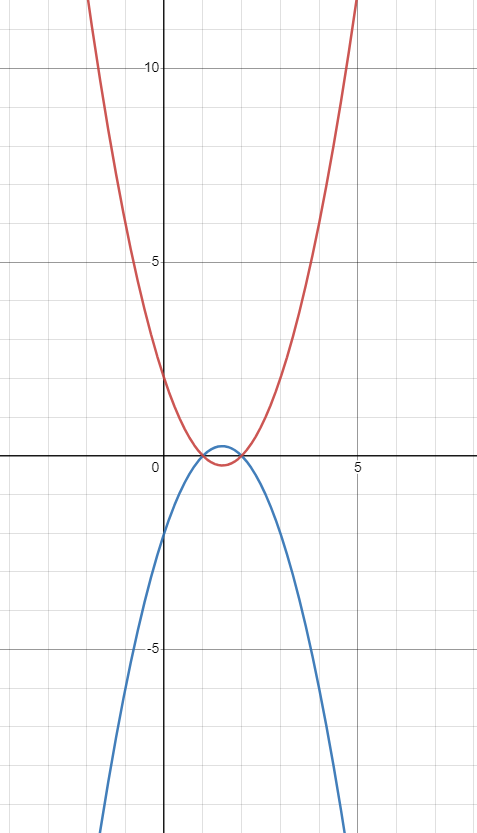
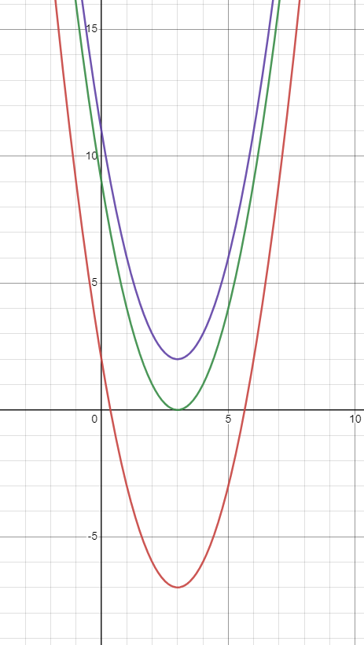

Topic 2 · Algebra and Functions
Algebra
Quadratics and their discriminants, polynomials and their roots, systems of equations, and the inequalities that bind them.
§3.1Introduction
This topic continues the methods of the previous one. Having worked with natural numbers, integers and, briefly, rational numbers, we now move to a larger set: the real numbers. To justify their existence, look at equations. \(ax+b=c\) has solutions in \(\mathbb Q\) for any rational \(a,b,c\) — but \(x^2=2\) does not: we proved by infinite descent that it has no rational solutions. Together, the rational and irrational numbers form the set of real numbers, \(\mathbb R\). And \(\pm\sqrt2\) are far from the only irrational numbers: Euler's constant \(e\) is irrational, as is any irrational number multiplied by, divided by, or added to a rational one.
§3.2Equations. Quadratic equations
A function of the form \(f(x)=a_nx^n+a_{n-1}x^{n-1}+\dots+a_1x+a_0\), with \(a_n\ne0\), is a polynomial of degree \(n\), written \(\deg(f)=n\). The coefficient \(a_n\) is the leading coefficient; if \(a_n=1\), the polynomial is monic. A grade \(n\) equation is an equation \(f(x)=y\) where \(f\) is a polynomial of degree \(n\).
The general form of a quadratic (grade 2) equation is \(ax^2+bx+c=0\). To find its solutions, first try this:
Prove that \(ax^2+bx+c=0\) implies \(\left(x+\frac b{2a}\right)^2=\frac{b^2-4ac}{4a^2}\).
Using the above, \(x+\frac b{2a}=\pm\sqrt{\frac{b^2-4ac}{4a^2}}\), and the solutions of the quadratic equation are \[x=\frac{-b\pm\sqrt{b^2-4ac}}{2a}.\] The quantity \(b^2-4ac\) is the discriminant, often written \(\Delta\).
- Write the equation in the form \(ax^2+bx+c=0\). If simpler, divide by \(a\).
- Calculate the discriminant \(\Delta=b^2-4ac\).
- Obtain the solutions \(x=\dfrac{-b\pm\sqrt\Delta}{2a}\).
Example. Solve \(3x^2-18x+16=1\). Subtracting 1 gives \(3x^2-18x+15=0\); dividing by 3, \(x^2-6x+5=0\). Then \(\Delta=36-20=16\), so \(x=\frac{6\pm4}{2}\): the solutions are \(x=5\) and \(x=1\).
What if \(\Delta<0\)? The square root doesn't exist among the reals — the answer is given in the Complex Numbers topic. Until then, a quadratic has real solutions iff \(\Delta\ge0\). When \(\Delta=0\), \(x=-\frac b{2a}\) is the only solution, and the quadratic can be rewritten \(ax^2+bx+c=a\left(x+\frac b{2a}\right)^2\).
Graphs. The graph of a quadratic is a parabola. We plot the two cases below: when \(a>0\) it opens upwards and has a minimum point; when \(a<0\) it opens downwards and has a maximum.

Since \(\left(x+\frac b{2a}\right)^2=\frac{b^2-4ac}{4a^2}\), the left side is smallest (zero) when \(x=-\frac b{2a}\) — that is where the turning point sits. The value of \(\Delta\) controls the crossings of the \(x\)-axis (for \(a>0\)): \(\Delta>0\) — two crossings; \(\Delta=0\) — the graph touches the axis once; \(\Delta<0\) — the graph stays fully above the axis. For \(a<0\) everything is inverted.

§3.3Problems
Let \(h(x)=ax^2+bx+c\) with \(a\ne0\). Give a condition which \(a,b,c\) must satisfy in order that \(h(x)\) can be written in the form \(a(x+k)^2\) (*), where \(k\) is a constant.
If \(f(x)=3x^2+4x\) and \(g(x)=x^2-2\), find the two constant values of \(\lambda\) such that \(f(x)+\lambda g(x)\) can be written in form (*). Hence, or otherwise, find constants \(A,B,C,D,m,n\) such that
\[f(x)=A(x+m)^2+B(x+n)^2,\qquad g(x)=C(x+m)^2+D(x+n)^2.\]
If \(f(x)=3x^2+4x\) and \(g(x)=x^2+\alpha\) and it is given that there is only one value of \(\lambda\) for which \(f(x)+\lambda g(x)\) can be written in form (*), find \(\alpha\).
Consider the quadratic equation
\[nx^2+2x\sqrt{pn^2+q}+rn+s=0,\quad(*)\]
where \(p>0\), \(p\ne r\) and \(n=1,2,3,\dots\)
(i) For the case \(p=3,\ q=50,\ r=2,\ s=15\), find the set of values of \(n\) for which (*) has no real roots.
(ii) Prove that if \(p<r\) and \(4q(p-r)>s^2\), then (*) has no real roots for any value of \(n\).
(iii) If \(n=1\), \(p-r=1\) and \(q=s^2/8\), show that (*) has real roots if and only if \(s\le4-2\sqrt2\) or \(s\ge4+2\sqrt2\).
Prove that, if \(|\alpha|<2\sqrt2\), then there is no value of \(x\) for which \[x^2-\alpha|x|+2<0.\quad(*)\] Find the solution set of (*) for \(\alpha=3\). For \(\alpha>2\sqrt2\), the sum of the lengths of the intervals in which \(x\) satisfies (*) is denoted by \(S\). Find \(S\) in terms of \(\alpha\) and deduce that \(S<2\alpha\). Sketch the graph of \(S\) against \(\alpha\).
Find the solutions of \(0=-3x^2+9ax-2a^2\), where \(a\) is real. If \(f(x)=-3x^2+9ax-2a^2\), sketch the function for the different cases of \(a\) that arise. For each value of \(a\), find the maximum value \(M(a)\) of the function.
How many real solutions are there to the equation \(x|x|+1=3|x|\), where \(|x|=x\) if \(x\ge0\) and \(-x\) otherwise?
The real numbers \(m\) and \(c\) are such that the equation \(x^2+(mx+c)^2=1\) has a repeated root \(x\), and also the equation \((x-3)^2+(mx+c-1)^2=1\) has a repeated root \(x\) (not necessarily the same value). How many possibilities are there for the line \(y=mx+c\)?
How many solutions are there to the equation \(2\cos^4\theta-5\cos^2\theta+3=0\) in the interval \(0\le\theta\le2\pi\)?
(a) Find all solutions of the equation \(16x^4-8x^2=-1\).
(b) Show that \(\sin3\theta=4\cos^2\theta\sin\theta-\sin\theta\) and that \(\sin5\theta=16\cos^4\theta\sin\theta-12\cos^2\theta\sin\theta+\sin\theta\).
(c) Find the general solution of the equation \(\sin5\theta+\sin3\theta+\sin\theta=0\).
Let \(f:\mathbb R\to\mathbb R\) such that \(f(f(x))=ax^2+bx+c\), with \(a,b,c\in\mathbb R\) and \(a\ne0\). Prove that:
(i) if \((1-b)^2<4ac\), then \(f\) doesn't have a fixed point (a point such that \(f(x)=x\));
(ii) if \((1-b)^2=4ac\), then \(f\) admits only one fixed point.
Consider the equation \(9x^2-6mx-(3m+2)=0\), with \(m\in\mathbb Z\). Find \(m\) such that the equation has solutions in \(\mathbb Q\).
Find real solutions to the equation \(5[x^2]-2[x]+2=0\), where \([x]\) is the largest integer not exceeding \(x\).
Let \(f:\mathbb R\to\mathbb R\) be an arbitrary function and \(g(x)=ax^2+bx+c\) a quadratic. We know that, for any two real numbers \(m,n\): \(f(x)=mx+n\) has solutions iff \(g(x)=mx+n\) has solutions.
(i) Let \(h(x)=mx+n\) be tangent to \(g(x)\). Find the equation that the tangent point must satisfy, and find the sign of \(g(x)-h(x)\).
(ii) Assume there is an \(x_0\) with \(f(x_0)<g(x_0)\). By picking a line tangent to the graph at \((x_0,g(x_0))\), prove that \(f(x)\ge g(x)\) for all \(x\).
(iii) Conclude that \(f(x)=g(x)\).
§3.4Polynomials
Roots of polynomials. The Binomial Theorem
We move to the general case of grade \(n\) equations. A grade \(n\) equation \(x^n+a_{n-1}x^{n-1}+\dots+a_0=0\) has a maximum of \(n\) real roots. Suppose it has exactly \(n\): \(x_1,\dots,x_n\).
If the equation \(x^n+a_{n-1}x^{n-1}+\dots+a_0=0\) has roots \(x_1,x_2,\dots,x_n\), then \[x^n+a_{n-1}x^{n-1}+\dots+a_0=(x-x_1)(x-x_2)\cdots(x-x_n).\]
Expanding this product gives strong equalities between coefficients and roots: \[(x-x_1)\cdots(x-x_n)=x^n-(x_1+\dots+x_n)x^{n-1}+\dots+(-1)^nx_1x_2\cdots x_n.\] Before concluding, one question: can we be sure that if two polynomials are equal at every value of \(x\), their coefficients are equal? Yes:
If \(f(x)=a_nx^n+\dots+a_0\) and \(g(x)=b_nx^n+\dots+b_0\) satisfy \(f(x)=g(x)\) for all \(x\), then \(a_i=b_i\) for all \(i\).
If \(x^n+a_{n-1}x^{n-1}+\dots+a_0=0\) has roots \(x_1,\dots,x_n\), then \(a_{n-1}=-(x_1+x_2+\dots+x_n)\) and \(a_0=(-1)^nx_1x_2\cdots x_n\). Further relationships are obtained from the Factor Theorem.
Roots need not be distinct: \(f(x)=(x-3)^2\) only has 3 as a solution — a repeated root, visible in the factorisation as a term \((x-x_0)^m\). To expand such terms we need a new quantity:
\(\displaystyle\binom mk=\frac{m!}{k!(m-k)!}\), where \(m!=1\cdot2\cdots m\).
\(\displaystyle(x-x_0)^m=\sum_{k=0}^{m}\binom mk(-1)^kx_0^k\,x^{m-k}\) — and more generally \(\displaystyle(a+x)^n=\sum_{r=0}^{n}\binom nr a^{n-r}x^r\).
The exam workhorse built on this theorem — extracting the coefficient of \(x^a\) from expansions like \((a+f(x))^n\) — gets its own treatment in Topic 8.
Relations between polynomials
A polynomial of degree \(n\) need not attain \(n\) real roots — \(x^2+4x+5\) has none, since its discriminant is negative. A polynomial decomposes as a product of linear polynomials (like \(x-1\)) and irreducible ones (like \(x^2+4x+5\)) — much like a number decomposes into prime factors. And just as numbers have division, so do polynomials:
Let \(f,g\) be polynomials with \(\deg(f)>\deg(g)\). Then there exist polynomials \(c(x)\) and \(r(x)\) such that \[f(x)=g(x)\cdot c(x)+r(x),\] where \(\deg(g)+\deg(c)=\deg(f)\) and \(\deg(r)<\deg(g)\). The parallel with numbers: the remainder polynomial has degree smaller than the divisor's, just as a remainder number is smaller than the number we divide by.
- Find \(c(x)\) from \(f(x)=c(x)\cdot g(x)+r(x)\): expand \(c(x)=c_lx^l+c_{l-1}x^{l-1}+\dots\) and determine the \(c_i\) one by one, matching the highest remaining power each time.
- Once all \(c_i\) are found, \(r(x)\) is the difference between \(f(x)\) and \(c(x)\cdot g(x)\).
Example. Divide \(x^3-3x^2+2\) by \(x-2\). Seeking \(c(x)=c_2x^2+c_1x+c_0\): matching \(x^3\) gives \(c_2=1\); matching \(x^2\) needs \(c_1-2=-3\), so \(c_1=-1\); matching \(x\) needs \(c_0+2=0\), so \(c_0=-2\). The remainder is then \(r(x)=-2\), and \[x^3-3x^2+2=(x^2-x-2)(x-2)-2.\]
Observation. Polynomials share many properties with numbers. If a number is divisible by both 2 and 3, which are coprime, it is divisible by 6. Similarly, a polynomial divisible by two coprime polynomials \(g(x)\) and \(h(x)\) is divisible by \(g(x)\cdot h(x)\).
§3.5Problems
The polynomial \(p(x)\) is of degree 9 and \(p(x)-1\) is exactly divisible by \((x-1)^5\).
(i) Find the value of \(p(1)\). (ii) Show that \(p'(x)\) is exactly divisible by \((x-1)^4\). (iii) Given also that \(p(x)+1\) is exactly divisible by \((x+1)^5\), find \(p(x)\).
Show that setting \(z-z^{-1}=w\) in the quartic equation \(z^4+5z^3+4z^2-5z+1=0\) results in the quadratic equation \(w^2+5w+6=0\). Hence solve the quartic. Solve similarly the equation \[2z^8-3z^7-12z^6+12z^5+22z^4-12z^3-12z^2+3z+2=0.\]
Let \(p_0(x)=(1-x)(1-x^2)(1-x^4)\). Show that \((1-x)^3\) is a factor of \(p_0(x)\). If \(p_1(x)=xp_0'(x)\), show, by considering factors, that \(p_0'(1)=0\) and \(p_1'(1)=0\). By writing \(p_0(x)=c_0+c_1x+\dots+c_7x^7\), deduce that \[1+2+4+7=3+5+6,\qquad 1^2+2^2+4^2+7^2=3^2+5^2+6^2.\] Show that we can write the integers \(1,2,\dots,15\) in some order as \(a_1,\dots,a_{15}\) in such a way that \[a_1^r+a_2^r+\dots+a_8^r=a_9^r+\dots+a_{15}^r\quad\text{for }r=1,2,3.\]
Let \(f(x)=x^n+a_1x^{n-1}+\dots+a_n\), and suppose \(f(x)=(x+k_1)(x+k_2)\cdots(x+k_n)\). By considering \(f(0)\), or otherwise, show that \(k_1k_2\cdots k_n=a_n\). Show also that \[(k_1+1)(k_2+1)\cdots(k_n+1)=1+a_1+a_2+\dots+a_n,\] and give a corresponding result for \((k_1-1)(k_2-1)\cdots(k_n-1)\). Find the roots of \(x^4+22x^3+172x^2+552x+576=0\), given that they are all integers.
Write down the expansion of \((1+x)^n\) as a polynomial in \(x\) with coefficients \(\binom nr\).
(a) (i) Show that \(\binom nr=\binom n{n-r}\); (ii) show that \(\sum_{r=0}^n\binom nr=2^n\).
(b) By considering \((1+x)^{n-1}(1+x)\), or otherwise, show that \(\binom nr=\binom{n-1}{r-1}+\binom{n-1}r\).
(c) By considering the derivative of \((1+x)^n\), or otherwise, show that \(\sum_{r=0}^n r\binom nr=n2^{n-1}\), and find \(\sum_{r=0}^n r^2\binom nr\).
(a) Show that \(\binom nr+\binom n{r-1}=\binom{n+1}r\).
(b) Prove that, when \(n\) is a positive integer, \((a+x)^n=a^n+na^{n-1}x+\dots+\binom nr a^{n-r}x^r+\dots+x^n\).
(c) Determine all values of \(a\) and \(b\) such that, when \((x+a)^3(x-b)^6\) is expanded as a sum of powers of \(x\), the coefficient of \(x^8\) is zero and the coefficient of \(x^7\) is \(-9\).
(a) Factorise \(x^2+x-6\).
(b) For which values of the real constant \(a\) does \(x^2+x-a=0\) have at least one real solution? Write down these solutions in terms of \(a\).
(c) Show that, for any value of the real constant \(b\), the equation \(x^3-(b+1)x+b=0\) has \(x=1\) as a solution. Find all values of \(b\) for which this equation has exactly two distinct solutions.
(a) Divide \(x^5-3x^4+3x^3-2x^2+2x-1\) by \(x^3-2\). (b) Divide \(x^3-x^2+x-1\) by \(x^2-1\). (c) Divide \(x^7-2x^5+3x^3-x\) by \(x^4\). (d) Divide \(x^9-1\) by \(1+x+x^2+\dots+x^8\).
When \(\left(3x^2+8x-3\right)\) is multiplied by \((px-1)\) and the resulting product is divided by \((x+1)\), the remainder is 24. What is the value of \(p\)?
In the expansion of \((a+bx)^5\) the coefficient of \(x^4\) is 8 times the coefficient of \(x^2\). Given that \(a\) and \(b\) are non-zero positive integers, what is the smallest possible value of \(a+b\)?
Let \(P(x)=x^3-ax^2+bx-c\), with \(a,b,c\in\mathbb R\) and roots \(x_1,x_2,x_3\). Find the value of \(S=(x_1-x_2)(x_2-x_3)(x_3-x_1)\) squared without solving the equation.
Let \(\alpha,\beta,\gamma\) be the roots of \(x^3+Ax^2+Bx+C=0\).
(a) Show that \(\alpha+\beta+\gamma=-A\), \(\alpha\beta+\beta\gamma+\gamma\alpha=B\), \(\alpha\beta\gamma=-C\).
(b) Find expressions for \(\alpha^2+\beta^2+\gamma^2\) and \(\alpha^3+\beta^3+\gamma^3\) in terms of \(A,B,C\).
(c) Find \(A\) when \(\alpha=-\beta\), \(B=-4\) and \(C=16\).
(i) Consider the equation \(x^3-ax^2+bx-c=0\). If \(a\) is an integer and the equation has more than one integer root, prove that all its roots are integers.
(ii) Consider the equation \(x^3+(1-a^2b)x^2+cx+a^2b=0\), where \(a,b\) are distinct primes and \(c\in\mathbb R\). Prove that the equation has at most one integer root.
Find the remainder when \(1+2x+4x^2+8x^3+\dots+(2x)^{50}\) is divided by \((x-2)\). Write your answer in the form \(\frac{2^a-b}{c}\) where \(a,b,c\) are positive integers.
§3.6Systems of equations
We now go in the opposite direction and deal with the simplest type of equation, the linear one. With two unknowns, an equation \(ax+by=c\) has infinitely many solutions: for any \(x\), \(y=\frac{c-ax}b\). To pin down a unique solution we need a second equation: \[ax+by=c,\qquad dx+ey=f.\]
- Multiply the equations so that \(x\) (or \(y\)) has the same coefficient in both.
- Subtract to obtain an equation in one unknown.
- This either leads to \(0=0\) — infinitely many solutions (one equation was a multiple of the other) — or to a unique value, from which the other unknown follows.
With more equations than unknowns, the system may be inconsistent (no solution): e.g. \(x+y=2\), \(x+2y=3\), \(x+4y=5\). For larger systems \[a_{11}x_1+\dots+a_{1n}x_n+b_1=0,\ \dots,\ a_{m1}x_1+\dots+a_{mn}x_n+b_m=0,\] the best course is to reduce to row echelon form: subtract equations to remove \(x_1\) from all but the first, then \(x_2\) from all but the first two, and so on, leaving a sequence of equations with strictly fewer unknowns each.
- By repeated subtractions, bring the system into row echelon form.
- If each successive equation has one fewer unknown, there is a unique solution — compute it. Otherwise there are infinitely many solutions, or none (likely when there are more equations than unknowns).
Geometric picture. Two linear equations in two unknowns are two lines; a unique solution is their single intersection point, and parallel-but-equal lines give infinitely many. With three unknowns the equations are planes: three planes can meet at one point, in a line, or not at all — a picture that will reappear constantly at university.
§3.7Problems
Consider the set of linear equations \[4x-y-z=21,\quad 2x+4y+z=69,\quad 8x+y-z=81,\quad -4x+7y+3z=57.\] (a) Find all real solutions \((x,y,z)\). (b) How many solutions are there if we also require \(x,y,z\) to be positive integers?
Consider the equations \(x-y=2\), \(4x+3y-z=3\), \(8x+13y-3z=a\).
(a) Show that the equations have no solutions unless \(a=1\). When \(a=1\), find the general solution.
(b) Suppose the equation \(5x-3y=4\) is added to the set, with \(a=1\). Do the equations then have a solution? If so, find it.
Find all solutions of \[5x-4y+kz=6,\quad kx-3y+6z=7,\quad 4x+2y-2z=2\] (a) when \(k=0\), and (b) when \(k=7\).
Find all solutions of \[x+(1-\lambda)z=3,\quad 2x+\lambda y+z=8,\quad -x+3\lambda y+(2+\lambda)z=3\] (a) when \(\lambda=0\), (b) when \(\lambda=1\) and (c) when \(\lambda=2\).
§3.8Inequalities
First, notice that all inequalities can be turned into one involving 0: to compare \(M\) and \(N\), prove \(M-N>0\) or \(M-N<0\). So a good starting point is inequalities involving 0.
For any \(x\in\mathbb R\), \(x^2\ge0\).
Simple as it seems, this leads to interesting results. From \((a-b)^2\ge0\) we get \(a^2+b^2\ge2ab\); with \(x=a^2,\ y=b^2\), this reads \(x+y\ge2\sqrt{xy}\) for \(x,y\ge0\). This generalises:
Let \(n\in\mathbb N\) and \(a_1,\dots,a_n\ge0\). Then \[\frac{a_1+a_2+\dots+a_n}{n}\ge(a_1a_2\cdots a_n)^{\frac1n},\] with equality only when \(a_1=a_2=\dots=a_n\).
Let \(n\ge2\) and \(a_1,\dots,a_n\), \(b_1,\dots,b_n\) be \(2n\) real numbers. Then \[\left(a_1^2+\dots+a_n^2\right)\left(b_1^2+\dots+b_n^2\right)\ge\left(a_1b_1+\dots+a_nb_n\right)^2.\]
Let \(f(x)=ax^2+bx+c\) with \(\Delta<0\). If \(a>0\), then \(f(x)>0\) for all \(x\); if \(a<0\), then \(f(x)<0\) for all \(x\).
Remark 1. Let \(a\in(0,1)\). Then \(a^n<a\) for all integers \(n>1\) — multiplying a fraction by itself only makes it smaller.
If \(M>N\), then \(f(M)>f(N)\) for any increasing function \(f\). But applying a decreasing function — for instance, multiplication by \(-1\) — flips the sign of the inequality: from \(2>1\) we get \(-2<-1\), not \(-2>-1\).
§3.9Problems
Prove that, for any \(a>0\), \(a+\frac1a\ge2\).
Let \(a_1,a_2,\dots,a_n>0\) such that \(a_1a_2\cdots a_n=1\). Prove that \((a_1+a_2)(a_2+a_3)\cdots(a_n+a_1)\ge2^n\).
Prove that \(a^2+b^2+c^2\ge ab+ac+bc\) for any \(a,b,c\in\mathbb R\).
Look at Question 3 from the Initial Aptitude Test. Can you solve it using the AM–GM inequality?
(i) Prove that, for \(a,b>0\), \(a^2x^2-abx+b^2\ge0\). When does equality happen?
(ii) Prove that, for \(a_1,a_2,b_1,b_2>0\), \(\left(a_1^2+a_2^2\right)x^2-(a_1b_1+a_2b_2)x+\left(b_1^2+b_2^2\right)\ge0\). When does equality happen?
(iii) Using a similar method, or otherwise, prove the Cauchy–Schwarz inequality.
Suppose \(a_i>0\) for all \(i\). Show that \(a_1a_2\le\left(\frac{a_1+a_2}2\right)^2\). Prove by induction that for all positive integers \(m\) \[a_1\cdots a_{2^m}\le\left(\frac{a_1+\dots+a_{2^m}}{2^m}\right)^{2^m}.\quad(*)\] If \(n<2^m\), put \(b_1=a_1,\ b_2=a_2,\dots,b_n=a_n\) and \(b_{n+1}=\dots=b_{2^m}=A\), where \(A=\frac{a_1+\dots+a_n}n\). By applying (*) to the \(b_i\), show that \(a_1\cdots a_n A^{(2^m-n)}\le A^{2^m}\) (notice that \(b_1+\dots+b_{2^m}=2^mA\)). Deduce the AM–GM inequality \((a_1\cdots a_n)^{1/n}\le\frac{a_1+\dots+a_n}n\).
Let \(a,b,c,d,p,q\) be positive integers. Prove that:
(i) if \(b>a\) and \(c>1\), then \(bc\ge2c\ge2+c\);
(ii) if \(a<b\) and \(d<c\), then \(bc-ad\ge a+c\);
(iii) if \(\frac ab<p<\frac cd\), then \((bc-ad)p\ge a+c\);
(iv) if \(\frac ab<\frac pq<\frac cd\), then \(p\ge\frac{a+c}{bc-ad}\) and \(q\ge\frac{b+d}{bc-ad}\).
Hence find all fractions with denominators less than 20 which lie between \(8/9\) and \(9/10\).
(i) Find the greatest and least values of \(bx+a\) for \(-10\le x\le10\), distinguishing carefully between the cases \(b>0\), \(b=0\) and \(b<0\).
(ii) Find the greatest and least values of \(cx^2+bx+a\), where \(c\ge0\), for \(-10\le x\le10\), distinguishing carefully between the cases that arise for different values of \(b\) and \(c\).
The real numbers \(a,b,c,d\) satisfy both \(0<a+b<c+d\) and \(0<a+c<b+d\). Which of the following inequalities must be true?
I. \(a<d\) II. \(b<c\) III. \(a+b+c+d>0\)